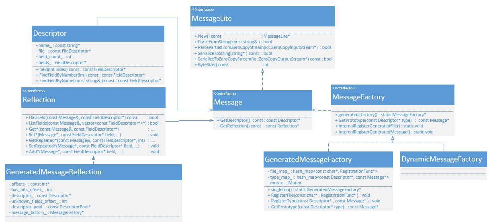

MessageLite
背景
之前在逆向YouTube期间遇到过：
__const:0000000004F7BF60 ; public video_streaming::OnesieRequestProto :
__const:0000000004F7BF60 ; public /* offset 0x0 */ proto2::MessageLite
结论
Protobuf的C++的类是：Message和MessageLiteMessageLite是轻量级=lite版的MessageLite版==编译为LITE_RUNTIME版本=runtime是lite版- 只有：
Encoding=编码和serializing=序列化- 没有：
reflection和descriptors
- 没有：
- 只有：
- MessageLite类的继承关系图
- 
LITE_RUNTIME
LITE_RUNTIME的定义
https://github.com/alexeyxo/protobuf-objc.git
中有定义：
src/compiler/google/protobuf/descriptor.proto
// Generated classes can be optimized for speed or code size.
enum OptimizeMode {
SPEED = 1; // Generate complete code for parsing, serialization,
// etc.
CODE_SIZE = 2; // Use ReflectionOps to implement these methods.
LITE_RUNTIME = 3; // Generate code using MessageLite and the lite runtime.
}
optional OptimizeMode optimize_for = 9 [default=SPEED];
以及相关部分：
src/compiler/google/protobuf/descriptor.pb.h
// nested types ----------------------------------------------------
typedef FileOptions_OptimizeMode OptimizeMode;
static const OptimizeMode SPEED = FileOptions_OptimizeMode_SPEED;
static const OptimizeMode CODE_SIZE = FileOptions_OptimizeMode_CODE_SIZE;
static const OptimizeMode LITE_RUNTIME = FileOptions_OptimizeMode_LITE_RUNTIME;
static inline bool OptimizeMode_IsValid(int value) {
return FileOptions_OptimizeMode_IsValid(value);
}
static const OptimizeMode OptimizeMode_MIN =
FileOptions_OptimizeMode_OptimizeMode_MIN;
static const OptimizeMode OptimizeMode_MAX =
FileOptions_OptimizeMode_OptimizeMode_MAX;
static const int OptimizeMode_ARRAYSIZE =
FileOptions_OptimizeMode_OptimizeMode_ARRAYSIZE;
static inline const ::google::protobuf::EnumDescriptor*
OptimizeMode_descriptor() {
return FileOptions_OptimizeMode_descriptor();
}
static inline const ::std::string& OptimizeMode_Name(OptimizeMode value) {
return FileOptions_OptimizeMode_Name(value);
}
static inline bool OptimizeMode_Parse(const ::std::string& name,
OptimizeMode* value) {
return FileOptions_OptimizeMode_Parse(name, value);
}
src/compiler/google/protobuf/descriptor.pb.cc
bool FileOptions::MergePartialFromCodedStream(
::google::protobuf::io::CodedInputStream* input) {
#define DO_(EXPRESSION) if (!(EXPRESSION)) goto failure
::google::protobuf::uint32 tag;
// @@protoc_insertion_point(parse_start:google.protobuf.FileOptions)
for (;;) {
::std::pair< ::google::protobuf::uint32, bool> p = input->ReadTagWithCutoff(16383);
tag = p.first;
if (!p.second) goto handle_unusual;
switch (::google::protobuf::internal::WireFormatLite::GetTagFieldNumber(tag)) {
// optional string java_package = 1;
case 1: {
if (tag == 10) {
DO_(::google::protobuf::internal::WireFormatLite::ReadString(
input, this->mutable_java_package()));
::google::protobuf::internal::WireFormat::VerifyUTF8StringNamedField(
this->java_package().data(), this->java_package().length(),
::google::protobuf::internal::WireFormat::PARSE,
"java_package");
} else {
goto handle_unusual;
}
if (input->ExpectTag(66)) goto parse_java_outer_classname;
break;
}
。。。
// optional .google.protobuf.FileOptions.OptimizeMode optimize_for = 9 [default = SPEED];
case 9: {
if (tag == 72) {
parse_optimize_for:
int value;
DO_((::google::protobuf::internal::WireFormatLite::ReadPrimitive<
int, ::google::protobuf::internal::WireFormatLite::TYPE_ENUM>(
input, &value)));
if (::google::protobuf::FileOptions_OptimizeMode_IsValid(value)) {
set_optimize_for(static_cast< ::google::protobuf::FileOptions_OptimizeMode >(value));
} else {
mutable_unknown_fields()->AddVarint(9, value);
}
} else {
goto handle_unusual;
}
if (input->ExpectTag(80)) goto parse_java_multiple_files;
break;
}
LITE_RUNTIME的用法
在.proto文件中加上定义：
option optimize_for = LITE_RUNTIME;
就表示：
- 底层实现是用：
MessageLite- 而不是普通的：
Message
- 而不是普通的：
- 且不会用到任何有关于
descriptors或reflection - 适用于场景：资源受限
- 此处YouTube估计是故意的，以便于你很难逆向找到protobuf的定义
- 注：如果只是想要省空间，则应该改用：
optimize_for = CODE_SIZE
Proto2MessageLite
另外，之前下载的
google/protobuf/protobuf-refs_heads_master/java/lite.md
中也有很多：Proto3MessageLite
以及可以搜到很多相关的：
java/core/src/test/java/com/google/protobuf/Proto2ExtensionLookupSchemaTest.java \
java/core/src/test/java/com/google/protobuf/Proto2LiteSchemaTest.java \
java/core/src/test/java/com/google/protobuf/Proto2MessageFactory.java \
java/core/src/test/java/com/google/protobuf/Proto2MessageInfoFactory.java \
java/core/src/test/java/com/google/protobuf/Proto2MessageLiteFactory.java \
java/core/src/test/java/com/google/protobuf/Proto2SchemaTest.java \
java/core/src/test/java/com/google/protobuf/Proto2UnknownEnumValueTest.java \
java/core/src/test/java/com/google/protobuf/Proto3LiteSchemaTest.java \
java/core/src/test/java/com/google/protobuf/Proto3MessageFactory.java \
java/core/src/test/java/com/google/protobuf/Proto3MessageInfoFactory.java \
java/core/src/test/java/com/google/protobuf/Proto3MessageLiteFactory.java \
java/core/src/test/java/com/google/protobuf/Proto3MessageLiteInfoFactory.java \
java/core/src/test/java/com/google/protobuf/Proto3SchemaTest.java \